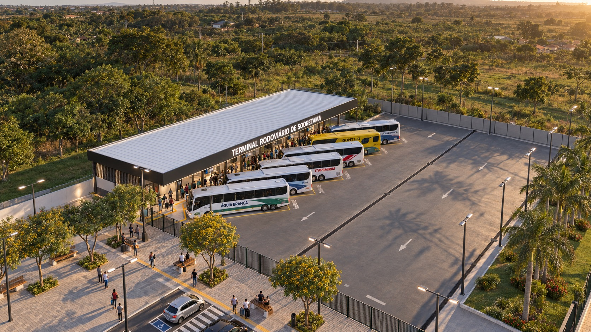

UM LUGAR, SEU OLHAR
Entre no projeto.
Entre no projeto.
Escolha o caminho.
A rodoviária de Sooretama vista por quem chega, por quem embarca e por quem imagina o conjunto.
IMAGENS
Preparando seu ponto de vistaO 3D carrega somente quando você entra.
Arraste para trocar a vista.
01 / 09
OLHAR 01
0 de 3 olharesA chegada
Observe a relação entre o terminal e seu entorno.
Escolha por onde começar.
ESTUDO PRELIMINAR R00Imagens ilustrativas · terreno indicativo
O próximo enquadramento
pode ser o seu.
Encontre uma vista, mude a luz e guarde uma imagem do seu passeio. Se compartilhar, marque @kmzero10 e conte o que chamou sua atenção.
Vamos conversar sobre seu projeto